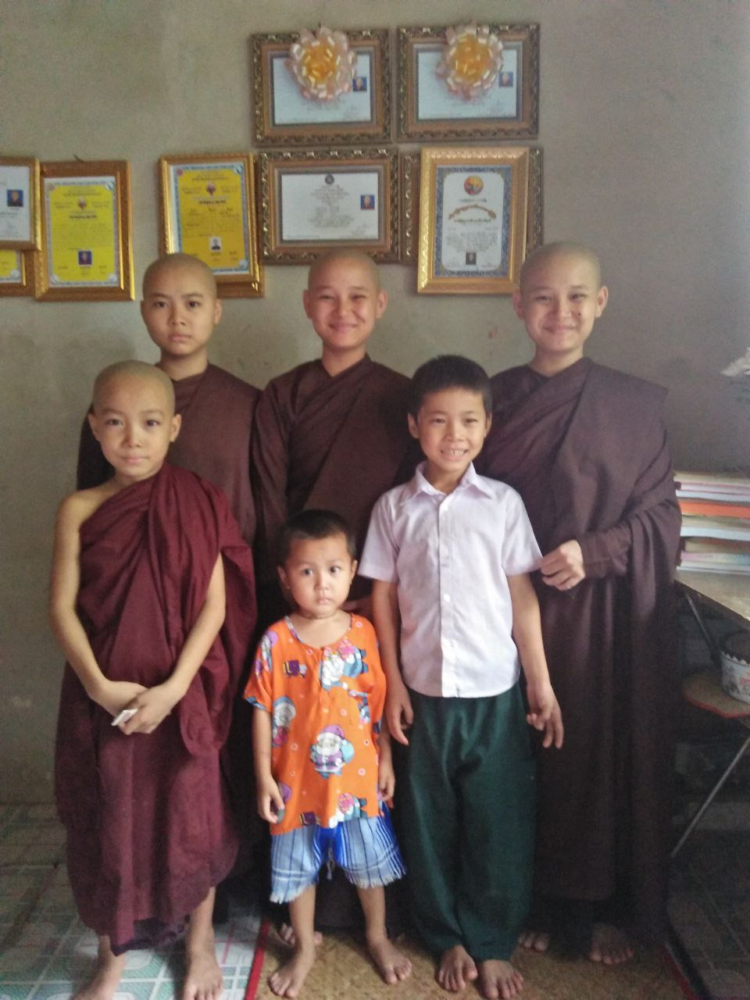
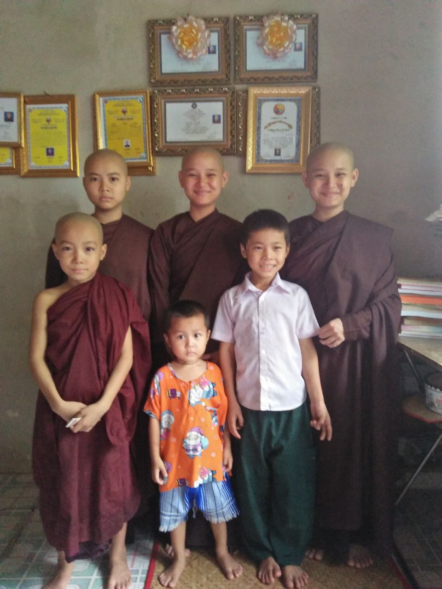

ကိုယ်ရေးအကျဉ်း
မင်္ဂလာပါ! ကျွန်မနာမည်ကနန်းမူးဟီးသူးပါ။ အသက် ၁၇ နှစ်ရှိပါပြီ။ ကရင်ပြည်နယ်၊ ဘားအံမြို့နယ်၊ တောင်ကလေးရွာက တောင်ကလေးဘုန်းတော်ကြီးသင်ပညာရေးကျောင်းမှာ Grade 11 တက်ရောက်နေပါတယ်။
အတန်းစာမှာ မြန်မာစာကိုလေ့လာရတာ အရမ်းကြိုက်ပါတယ်။ ကျောင်းမှာ သူငယ်ချင်းတွေနဲ့စာလုပ်ရတာ အရမ်းကိုပျော်ရွှင်ရပါတယ်။ အခြားသူတွေနဲ့သိပ်ပြီးရင်းရင်းနှီးနှီးမနေတတ်ပေမယ့် အနီးနားသူငယ်ချင်းတွေနဲ့ဆိုရင်တော့ စနောက်ရယ်မောပြီး ပျော်ပျော်ရွှင်ရွှင်နေတတ်ပါတယ်။
အိမ်မှာဆိုရင် မိဘတွေကိုကူညီပါတယ်။ အကြီးဆုံးသမီးတစ်ယောက်ဖြစ်တာမို့ အိမ်မှုကိစ္စအစစအရာရာကိုဆောင်ရွက်ရပါတယ်။ အလုပ်နဲ့ပတ်သတ်လာရင် သူများခိုင်းတာမဟုတ်ဘဲ ကိုယ့်ဘာသာလုပ်ရတာက ပိုကောင်းတယ်လို့ ခံယူထားပါတယ်။
ပညာရေး
ကျောင်း
တောင်ကလေးဘုန်းတော်ကြီးသင်ပညာရေးကျောင်း
အတန်း
Grade 11
ဆုတံဆိပ်
ပါဠိကေတုဆု
ဝါသနာနှင့် စိတ်ဝင်စားမှုများ
သီချင်းနားထောင်ခြင်း
ကြက်တောင်ရိုက်ခြင်း
သီချင်းဆိုခြင်း
ဗီဒီယိုကြည့်ခြင်း
ဗီဒီယိုမှသင်ခန်းစာယူခြင်း
ကျွန်မရဲ့ဖန်တီးမှုများ
ဗီဒီယိုတွေကနေသင်ယူရတဲ့အရာတွေကို အသစ်တီထွင်ဖန်တီးရာမှာအသုံးချရတာ အရမ်းကြိုက်ပါတယ်။
PEDU Blood ပရောဂျက်
ကျွန်မတို့ကျေးရွာမှာ သွေးလှူဒါန်းမှုနဲ့ပတ်သက်တဲ့ အသိပညာပေးရေးနဲ့ ညှိနှိုင်းဆောင်ရွက်ပေးတဲ့ ပရောဂျက်တစ်ခုပါ။
ကျွန်မဘဝမှတ်တမ်းဓာတ်ပုံများ


 
